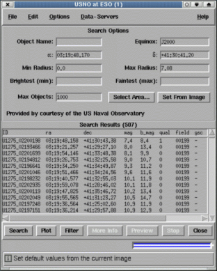

This window displays information obtained from remote and local catalogues. It allows you to make queries of the catalogues for information about a region of sky, select which elements of the catalogue are displayed and control the appearance of the associated image markers.
Select the "Set Sort Columns..." item in the "Options" menu. This will create a dialog window in which you can select the column that you want to sort by. After closing this window the display will be updated.
Select the "Set Search Columns" item in the "Options" menu. This will create a dialog window in which you can select the name of the column containing the values that you'd like to select by. When you close this dialog the columns you have selected will now be shown in the catalogue window. Just enter the upper and lower limits as shown and press "Search". Only entries with values in this range will now be shown.
Just place the cursor over the object on the image and press mouse button 1. This will highlight the associated data in the catalogue window.
Just place the cursor over the row of data and press mouse button 1. This will highlight the associated object in the image window.
If you can not see it press mouse button 2. This centres the main window on the selected object (very useful for large or zoomed images).
If any objects are not drawn due to a plotting selection then they can be removed from catalogue list by pressing the Filter button. If all objects are drawn (this is usually the case) then Filter will remove any off-image objects instead (so a double press will remove any undrawn objects and all off-image objects). To recover all the objects repeat the Search.
If you want to edit a row of data you must have a local catalogue loaded. You can change a remote catalogue to a local one by saving it to a disk file and then reopening it.
To edit a row select it and then choose the "Edit selected object..." item in the "Edit" menu. This creates a dialog window in which you can change the values. Remember to press the "Enter" button before closing the window.
If you want to remove a row of data you must have a local catalogue loaded. You can change a remote catalogue to a local one by saving it to a disk file and then reopening it.
To remove a row select it and then choose the "Remove selected" item in the "Edit" menu. You can remove a range of rows by selecting them all first (you can select a range either by dragging, or by using the control key to keep the current selection).
If you want to add a row of data you must have a local catalogue loaded. You can change a remote catalogue to a local one by saving it to a disk file and then reopening it.
To add a new row to a catalogue select the "Enter new object..." item in the "Edit menu". This creates a dialog window in which you can enter the values. Remember to press the "Enter" button before closing the window.
To label an object in the image window, just double click over the row of data (the first column is usually used as the label).
Select the "Set Plot Symbols..." item in the "Options" menu. This will create a dialog window in which you can define the shape of the marker used to identify the object. You can also define its size, orientation and colour. To define the size etc. you can simply enter constants, or to achieve more complex effects, you can enter (Tcl) expressions of the column names.
To see some examples of this run the "Object detection" toolbox selecting the options to display ellipses and circles. Now if you look in the plot symbols window you'll see how these expressions are created.
If bibliographic information is included with your remote catalogue, then when you select a row the "More" button will become active. To see the details press the "More" button, this will start up Netscape and display the page of information.
This will be activated for data retrieved from the telescope archives. When pressed it will obtain an "preview" of the data, if available.
If you make a query to a remote catalogue, which then doesn't reply (either because the network is too slow, or the server is down), then press the "Stop" button to abort the query.
This can only be done using the "Clear" item of the "Graphics" menu in the main image window. To replot the graphics press the "Plot" button.
Just select the "Save as..." item in the "File" menu. This will create a dialog window in which you enter a filename.
Just select the "Print..." item in the File menu. This option will also allow you to save the catalogue as a plain text file (space separated)